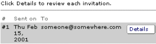
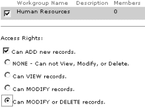
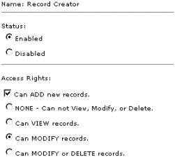
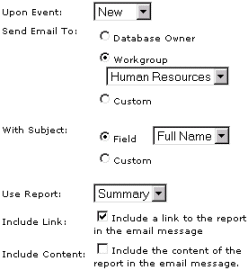

| Help Topics > Concepts & Tutorials |
|
DatabasePlus Tutorial 3 Managing Workgroups, creating Access Rights, publishing Reports and creating Table Events |
| This short tutorial will get you acquainted with Workgroups, Access Control, publishing Reports, and adding Events to tables. |
|
1. Creating the Workgoup Here, you will create a new workgroup and invite users to join the workgroup. You may invite anybody who has an e-mail address. From My Desktop, click Add new Workgroup
You can review your invitations by clicking Review Invitations. It should look similar to this:  2. Granting Access Rights Here, you will grant the Human Resources group access to add, modify or delete any records in any table in your database. Click Author under the Contact Manager database
It should look like this:  Next, you will set specific access rights on the Contacts table. Setting table level security bypasses database security. You can grant or deny access to to a table just like the database. Select Tables from the Type navigation pull-down menu
Now you can edit table access rights:
It should look like this:  3. Publishing a Report Here, you will publish a report to an e-mail recipient or recipients. There are two options when publishing reports: Embed a Report, when allows you to copy the result and paste it directly in a web page; and E-mail a Report, which provides a link to the report. In this tutorial, we will E-mail the report. To publish reports to non-members, you must enable the Public account under Database Access Control. Select Database from the Type navigation pull-down menu
If everything worked, you should have an e-mail in your e-mail in-box. Open the message and click the web page link, then create a new account. After logging in, you should have access to the Contact Manager reports. 4. Creating an Event Events allow you or others to be notified when a record has been created, modified or deleted. It is best used with the workgroup and shared database features. Select Tables from the Type navigation pull-down menu.
 Now, any time a new contact is entered, all members of the Human Resources group will be notified. This concludes Tutorial 3. |